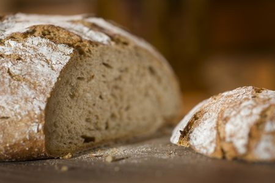
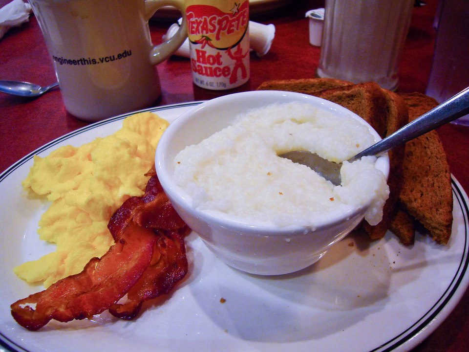
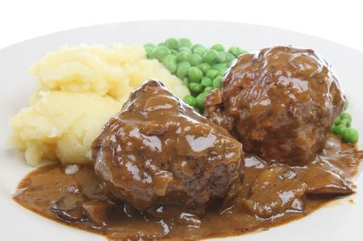
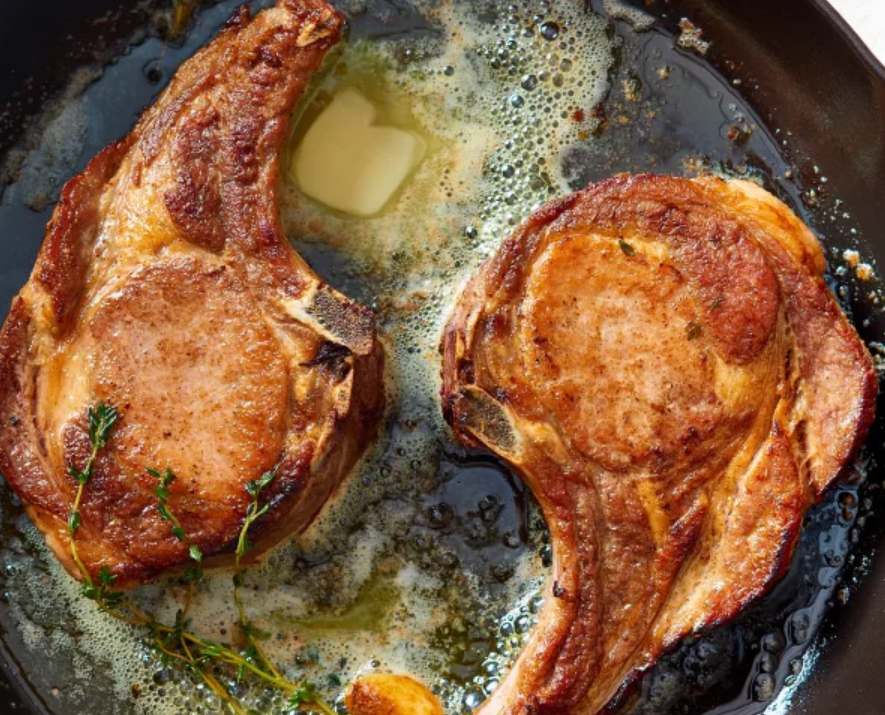
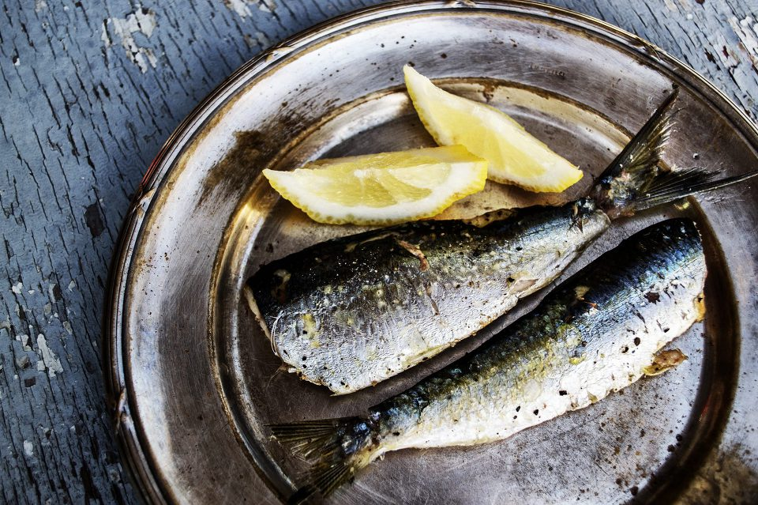
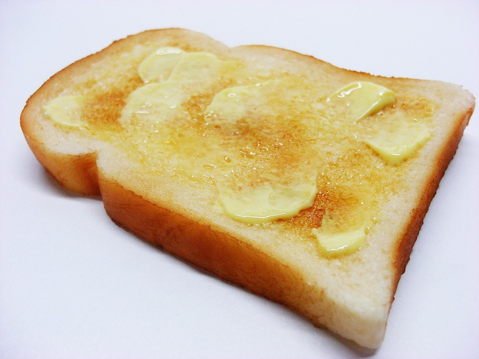
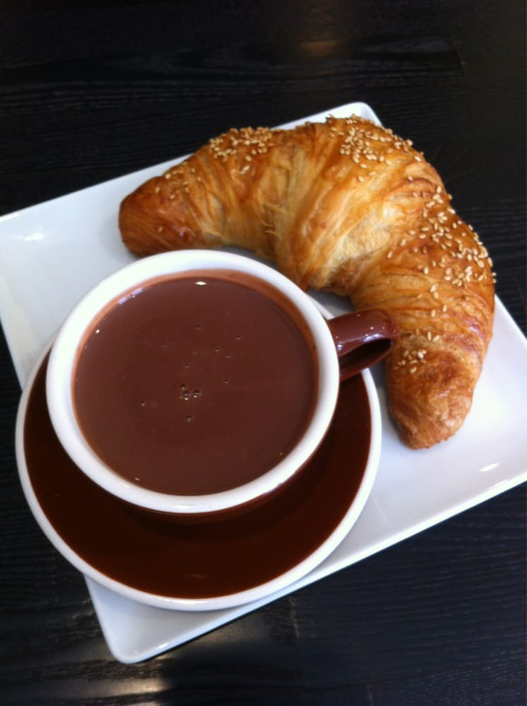
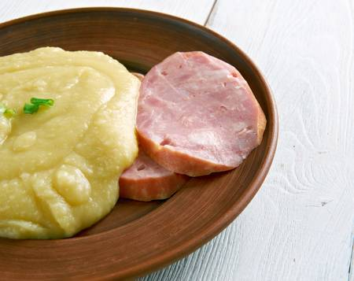
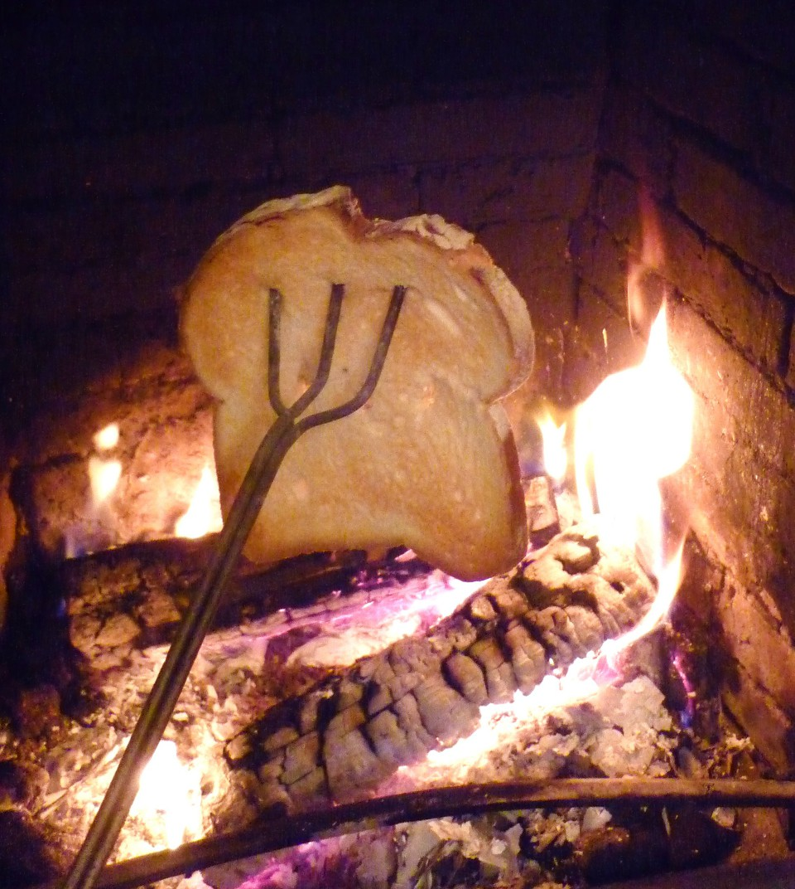

나폴레옹 시대의 아침 식사 광경 (발췌 번역)
게시: 2018-12-27T01:32:00+09:00
제가 좋아하는 3대 나폴레옹 전쟁 소설 시리즈인 혼블로워, 샤프, 잭 오브리 시리즈들 중에서 아침식사 장면만 몇몇 번역을 해보았습니다. 그냥 심심풀이로 읽어보세요. 다만, 출출한 야밤에 읽으시면 좀 곤란하겠네요.
Mr. Midshipman Hornblower by C.S.Forester (배경 : 1795년 프랑스) --------------------- (프랑스 망명귀족들이 영국 해군의 도움을 받아 프랑스 퀴베롱 지역에 상륙합니다. 사관후보생 혼블로워는 통역으로 이들과 동행합니다.) 그들은 번쩍이는 구리 냄비가 벽에 걸린 커다란 주방으로 들어갔고, 말이 없는 여자가 커피와 빵을 내왔다. 그녀는 애국자로서 열정적인 반혁명주의자일 수도 있었겠지만, 최소한 그런 내색을 하지는 않았다. 물론, 그녀의 감정은 이 귀족 패거리들이 자신의 집을 멋대로 점거하고는 자신의 음식을 돈도 내지 않고 마음대로 먹고 있다는 사실로 인해 쉽게 영향을 받을 수도 있었다. 어쩌면 망명 귀족들의 군대가 징발한 마차나 말들 중에는 그녀 소유의 것이 있을 수도 있었다. 그리고 어제밤에 단두대에서 처형당한 주민들 중 몇몇이 그녀의 친구일 수도 있었다. 하지만 그녀는 커피를 내왔고, 참모진들은 박차를 단 장화를 신은 채 커다란 주방 여기저기에 서서 아침을 먹기 시작했다. 혼블로워는 그의 컵과 빵 한조각을 손에 들었다. 이 순간 이전에는 4달 동안이나 건빵 외에는 빵을 먹어본 적이 없었다. 커피를 한모금 마셨다. 맛이 좋은지 나쁜지 뭐라고 판단을 내릴 수가 없었다. 그는 전에 커피를 겨우 3~4번 정도 밖에 마셔본 적이 없었던 것이다. 하지만 컵을 두번째 들어올렸을 때, 그는 마시지 않았다. 마시기 직전에 저 멀리 어디선가 대포 소리가 울렸기 때문에, 그는 컵을 내려 놓고 얼어붙은 듯 굳어 버렸던 것이었다. 대포 소리는 두번, 세번 반복되었고, 그에 이어 더 가까이서 더 날카로운 포성이 울렸다. 둑방길에 설치되었던 사관후보생 브레이스거들의 6파운드 포의 포성이었다. 주방에서는 즉각 난리법석이 일어났다. 누군가가 컵을 엎질러 검은 액체의 시냇물이 테이블을 가로질러 흘렀다. 다른 누군가는 서둘러 나가다 박차가 서로 엉켜 다른 사람의 품 안에 쓰러졌다. 모든 사람이 일시에 말을 하는 것 같았다. 혼블로워도 다른 사람들처럼 몹시 흥분되었다. 그도 당장 뛰어나가 무슨 일이 벌어지고 있는 것인지 알아보려 했지만, 그 순간 자신이 소속된 HMS 인디퍼티거블 호가 전투 직전에 보여주었던 군기잡힌 차분함을 생각해냈다. 그는 이런 부류의 프랑스 사람이 아니었고, 그걸 증명하기 위해 컵을 들어올려 차분히 마셨다. 이미 대부분의 참모진들은 말을 대령하라고 외치면서 밖으로 뛰어나간 상태였다. 안장을 채우는데는 시간이 걸릴 것이었다. 그는 주방을 서성이는 푸조쥬와 눈길이 마주쳤는데도, 차분히 커피를 주욱 다 마셨다. 비록 좀 뜨겁긴 했지만 뭔가 폼나는 행동이라고 생각이 들었다. 빵도 있었기 때문에, 식욕이 전혀 없었지만 억지로 씹어삼켰다. 이제 야전에 하루 종일 있을 거라면, 다음번 식사가 언제일지 전혀 알 길이 없을 것이기 때문이었다. 먹다남은 반덩어리의 빵은 주머니에 쑤셔 박았다.

Master and Commander by Patrick O'Brian (배경: 1800년, 스페인 부근 마요르카 섬)------------------ 사실 목공장의 때이른 열성은 바로 이 때문이었고, 또 장교 식당의 급사가 전임 함장인 앨런 함장의 변함없는 아침식사 메뉴였던 스몰 비어(옥수수 죽(hominy grits), 그리고 차가운 쇠고기를 들고 서성거렸던 이유이기도 했다.

Lieutenant Hornblower by C.S.Forester (배경 : 1801년 대서양 HMS Renown 선상) --------------------- 장교실에 아침식사가 진행되고 있었다. 평상시보다는 더 조용하고 활기가 없는 아침식사였다. 항법장, 사무장, 해병 대위가 평소와 같은 '굿 모닝' 인사를 하고는 더 이상의 대화 없이 앉아 먹기 시작했다. 그들도 전함의 다른 모든 사람들처럼 함장의 의식이 깨어나고 있다는 소식을 들어 알고 있었던 것이다. 배 현창으로 두 줄기의 긴 햇살이 들어와 그 비좁고 사람이 빽빽히 앉은 선실을 비추면서, 배의 부드러운 움직임에 따라 장교실 바닥을 앞뒤로 흔들거렸다. 북동쪽에서 불어오는 무역풍의 신선하고 상쾌한 공기가 열린 문으로 들어오고 있었다. 커피는 뜨거웠고, 배에 실린지 3주 밖에 안된 건빵은 바구미가 전혀 없는 것이, 배에 실리기 전에도 창고에 보관된 것이 겨우 1~2달 밖에 안되었던 모양이었다. 장교실 요리사는 눈치좋게 좋은 날씨의 기분을 내려고 지난 밤의 염장 돼지고기와 배에서 점점 줄어가는 저장 양파를 볶아 내놓았다. 채를 썰어 양파와 함께 볶은 염장 돼지고기에, 뜨거운 커피와 오래 되지 않은 건빵에, 신선한 공기와 햇살에 좋은 날씨라면, 장교실은 아주 활기찬 장소여야 했다. 하지만 분위기는 근심과 걱정, 팽팽한 긴장감이 감돌았다. Lieutenant Hornblower by C.S.Forester (배경 : 1802년 런던 혼블로워의 하숙집) --------------------- (방세를 못내 구박받던 혼블로워가 지난 밤 도박장에서 큰 돈을 따서 밀린 방세를 내고 그 동안 당했던 설움에 방을 옮기겠다고 하자, 하숙집 주인인 메이슨 부인이 서둘러 근사한 아침식사를 올려보내줍니다.) 어린 수지가 케이블이 올려질 때 절단기를 들고 뛰어다니는 소년들처럼 두 테이블 사이를 왔다갔다 하며 식탁을 차렸다. 커피 포트와 토스트, 버터와 잼, 설탕과 밀크, 양념병과 뜨거운 접시, 그리고 넓은 접시가 혼블로워 앞에 놓여졌다. 그녀가 뚜껑을 들어올리자 접시에 놓인 멋진 챱스 요리에서 맛있는 냄새가 피어올라 방안을 채웠다. "아!" 혼블로워가 스푼과 포크를 들어올리며 말했다. "너 아침은 먹었니, 수지 ?" "저요, 중위님? 아니오, 아직이요." 혼블로워는 손에 스푼과 포크를 든 채 멈춰 챱스와 수지를 번갈아 쳐다보았다. 그러더니 스푼을 내려놓고는 오른손을 바지 주머니에 찔러넣었다. "이런 챱스 요리를 니가 먹을 방법이 전혀 없겠지 ?" 그가 말했다. "저요, 중위님 ? 물론 안되요." "이제 여기 반 크라운(half-crown. 2.5 실링짜리 은화. 현재 가치로 약 3만2천원 : 역주)이 있단다." "반 크라운이라고요 !" 그건 노동자 하루 일당의 절반이 넘는 금액이었다. "너에게서 약속을 받아야겠다, 수지." "중위님 - 중위님 - !" 수지의 손은 등 뒤로 사라졌다. "이걸 받고, 시간이 나는 대로, 메이슨 부인이 너를 나가도 좋다고 하자마자, 당장 나가서 뭔가 먹을 걸 사거라. 너의 그 불쌍하고 조그마한 배를 채우라고. 패것(faggot. 잘게 썬 고기를 빵과 섞어 구운 것: 역주)이나 완두 푸딩, 돼지 족발 (pig's trotters), 니가 먹고 싶은 건 모조리. 약속해." "하지만 중위님 -" 반 크라운, 거의 무제한의 음식, 이런 것은 사실이기엔 너무나 환상적인 것들이었다. "아, 받으라고." 혼블로워는 퉁명스럽게 말했다. "예, 중위님." 수지는 그녀의 바짝 마른 손에 은화를 꽉 움켜쥐었다. "약속했다는 거 잊지 말라고." "예, 중위님, 정말, 고맙습니다, 중위님."

Sharpe's Fortress by Bernard Cornwell (배경 : 1803년 인도) ----------------------------- (샤프는 영국군 기병대의 아는 친구를 찾아 갑니다.) 록하트 중사는 연기 자욱한 아침부터 찾아온 불청객 이야기에 궁시렁거렸으나, 그 방문자가 샤프인 것을 알아보고는 씨익 웃었다. "아마 싸움거리가 생긴 모양이다, 얘들아." 그는 소리쳤다. "망할 보병이 왔네 그려. 좋은 아침입니다, 소위님. 저희 도움이 또 필요하신가요 ?" "아침 좀 먹었으면 하는데." 샤프가 솔직하게 털어놓았다. "홍차부터 시작하시지요. 스미더스 ! 포크 챱스를 가져와 ! 데이비스 ! 니가 나 몰래 숨겨 놓은 빵 좀 가져와 ! 당장 움직여 !" 록하트는 다시 샤프를 돌아보았다. "포크 챱스가 어디서 생긴 건지는 묻지 마세요. 물으시면 거짓말을 해야 합니다." 그는 양철 머그잔에 침을 뱉고는 담요 끝으로 그 내부를 닦아내고, 거기에 차를 따랐다. (...중략...) 포크 챱스와 빵을 먹고나자, 중사는 샤프를 인도인 기병대 진지를 가로질러 제7 인도 기병대의 지휘관의 텐트로 데려갔다. 그 지휘관이 전체 원정군의 기병대를 책임지고 있는 모양이었다. "그분 이름은 허들스톤이고요," 록하트가 말했다. "그리고 괜찮은 양반이에요. 아마 우리에게 두번째 아침식사를 권할 겁니다." 허들스톤 대령은 정말 록하트와 샤프에게 쌀과 달걀로 된 아침식사를 권했다.

Sharpe's Trafalgar by Bernard Cornwell (배경 : 1805년 인도양 무역선 상) ----------------------------- 아침식사는 매일 오전 8시였다. 3등실의 승객들은 종종 그룹으로 나뉘어, 각 그룹 내에서 당번을 정해 앞갑판(forecastle) 쪽에 있는 주방으로부터 버구(burgoo) 한단지를 가져왔다. 버구라는 것은 오트밀 죽에 밤새 주방 난로에서 고기를 삶을 때 나온 쇠고기 기름 조각을 섞은 것이었다. 점심은 정오에 있었는데, 이 때의 메뉴도 역시 버구였다. 다만 점심 때의 버구에는 좀더 큰 고기 조각 또는 질긴 말린 생선 조각이 좀 탄데다 덩어리진 오트밀에 섞여 나왔다. 일요일에는 소금에 절인 생선과 돌처럼 딱딱한 건빵이 나왔는데, 건빵은 바구미 투성이어서 탁탁 두들겨 벌레를 빼내야 했다. 비스킷은 끊임없이 씹어야 했는데, 마치 벽돌을 으깨는 것 같은 느낌이었고, 건빵을 두들길 때 빠져나오지 못한 벌레가 이따금씩 씹혀서 색다른 맛을 내기도 했다. 차는 오후 4시에 제공되었으나, 이는 배 고물 쪽의 1등실 승객들에게만 제공되었고, 3등실 승객들은 저녁 때가 되기를 기다려야 했는데, 그 메뉴도 그저 말린 생선에 비스킷, 그리고 벌레 구멍이 숭숭 뚫린 딱딱한 치즈였다. (...중략...) 1등실의 승객들에게는 아침식사로 3등실에는 절대 나오지 않는 사치품인 달걀과 커피가 제공되었는데, 샤프는 이 VIP 승객들과의 아침식사에는 초대받지 못했다. (...중략... 샤프는 무역선에서 영국 군함 HMS Pucelle로 옮겨 탑니다.) 체이스 함장은 샤프를 반겼다. 체이스의 함장모는 그의 턱에서 매듭을 진 캔버스 천으로 묶여 있었다. "아침은 들었나 ?" "예, 함장님." 푸셀 호에는 보급품이 떨어져가고 있었으므로 아침식사는 변변치 못한 편이었다. 장교들도 수병들처럼 부실한 배급량의 쇠고기와 건빵, 그리고 스캇치 (Scotch) 커피로 때우고 있었는데, 스캇치 커피란 태운 빵부스러기를 뜨거운 물에 풀고 설탕으로 단 맛을 낸 꺼림직한 액체였다. Sharpe's Prey by Bernard Cornwell (배경 : 1807년 덴마크) ----------------------------- (덴마크군의) 장군은 차가운 청어, 치즈와 빵으로 된 아침식사를 새벽이 되기 훨씬 전에 이미 먹었다. 이제 부대원들이 부산하게 움직이며 행군 준비를 시작했다. 민병대 대령 한명이 목사의 집에 와서 자기 부대원들이 맞지 않는 구경의 탄약을 공급받았다는 우울한 보고를 했다. "구경은 맞을 겁니다." 대령은 보고했다. "하지만 총강 내에서 총알이 튀어다닙니다. 이런 걸 두고 유극(windage, 총강과 탄환 사이의 간격: 역주)이 너무 크다고 하더군요." 민병대 대령은 보르딩보르그 출신의 치즈 제조업자였는데, 사실 목제 나막신을 신은 그의 병사들을 영국군 정규병들 앞에 내모는 것이 영 탐탁치 않았다.

Sharpe's Havoc by Bernard Cornwell (배경 : 1809년 포르투갈) ----------------------------- 새벽녁에 그들은 나무가 우거진 언덕에 다다랐다. 그들은 시냇물가에 멈춰서 오래된 빵과 너무 딱딱해서 구두 밑창으로 써야겠다고 농담들을 해댄 훈제 고기로 아침을 먹었다. 병사들은 샤프가 불을 피워 홍차를 끓이는 것을 금지시켰기 때문에 궁시렁거렸다. (...중략...) 궁전 복도의 시계가 11시를 알릴 때, 술트 원수가 중앙의 대형 계단을 내려왔다. 그는 바지와 셔츠 위에 비단 가운을 걸치고 있었다. "아침식사는 준비되었나 ?" 그가 물었다. "청색 리셉션 룸에 준비되었습니다, 장군님." 부관이 대답했다. "손님들께서도 오셨고요." "좋아, 좋아 !" 그는 시종들이 문을 열어주기를 기다렸다 방으로 들어가며 방문자들을 활짝 웃으며 반겼다. "앉으시지요, 앉으세요. 아, 우리가 공식적으로 하는 것은 아니군요." 이 마지막 말은 아침 식사가 긴 옆 테이블에 풍로가 달린 은제 식탁 냄비(chafing dishes 역주: 부페에 가면 볼 수 있는 그릇)에 차려져 있는 것을 보았기 때문이었다. 술트 원수는 그 뚜껑을 열어보며 긴 식탁을 따라 걸었다. "햄 ! 멋지군. 삶은 콩팥, 굉장해 ! 쇠고기 ! 혀 요리, 좋군, 좋아, 그리고 간 요리. 아주 맛있어 보이는군. 좋은 아침이요, 대령 !" 이 인사는 크리스토퍼에게 한 것이었는데, 이에 대해 크리스토퍼는 고개를 숙임으로써 답했다. Sharpe's Rifles by Bernard Cornwell (배경 : 1809년 스페인) ----------------------------- 새로 부임한 중위는 지금 시간이 정오 2시간 전 쯤 되었다고 생각했다. 이 전투 후퇴는 오후 일찍 끝날 것이고, 그러고나면 그는 서둘러 하들이 밤을 보낼 만한 외양간이나 교회 같은 곳을 찾아내야 할 것이다. 그는 병참 장교가 밀가루 한포대를 들고 나타나기를 고대했다. 그걸 물로 반죽해서 쇠똥으로 피운 불 위에 구우면 저녁거리와 그 다음날 아침거리로는 충분했다. 재수가 좋으면 죽은 말에서 고기를 좀 구할 수 있을지도 몰랐다. Sharpe's Sword by Bernard Cornwell (배경 : 1812년 스페인) ----------------------------- "아, 좋아 ! 공작님께 알려드려야지. 자네 아침 먹었나 ?" "예, 소령님." "그럼 한번 더 들게 ! 내가 하인을 시켜서 자네 말을 마굿간에 넣도록 하지." 그는 가다 멈춰서 샤프를 돌아다 보았다. "힘들었나 ?" "예." 호간 소령은 어깨를 으쓱해보였다. "유감이군. 하지만 자네 일이 제대로 되었다면 말일세, 리처드..." "압니다." 그의 일이 제대로 되었다면 전투가 있을 것이었다. 마을 남쪽 언덕 둘레의 드넓고 건조한 평원은, 벼락이 치던 날 밤의 배신과 사랑에서 싹이 튼 살륙의 현장이 될 것이었다. 샤프는 두번째 아침 식사를 하러 갔다. Sharpe's Enemy by Bernard Cornwell (배경: 1812년, 포르투갈)---------------------------------------- 웰링턴이 외지로 떠나고 난 뒤라서, 장교들은 아침시간을 침대에서 보내든가, 아니면 바로 옆 여관에 딸린 식당에서 아침을 먹고 있었다. 이 포르투갈 여관 주인은 제대로 된 아침 식사를 만드는 법을 배운 모양이었다. 포크 찹스, 계란 프라이, 튀긴 콩팥, 베이컨, 토스트, 클라레 포도주, 더 많은 토스트, 버터, 그리고 화약찌꺼기가 늘러붙은 곡사포의 포구를 씻어내릴 정도로 강하게 끓인 티가 준비되어 있었다.

Clarissa Oakes by Patrick O'Brian (배경: 1813년, 남태평양 영국 군함 선상)------------------ "그럼 가서 첫번째 아침식사를 나와 함께 들겠는지 머투어린 박사께 여쭙게." 잭 오브리는 우람한 체구를 유지하기 위해, 아침을 두번 먹었다. 아침 해가 뜰 무렵 토스트 약간과 커피를 들었고, 8번 타종 (역주: 오전 8시) 직후에 훨씬 더 든든한 식사, 즉 어쩌다 잡힌 신선한 생선, 달걀, 베이컨, 가끔씩은 양고기 챱스(chops)를 아침에 당직을 섰던 장교 및 사관후보생(midshipman)과 종종 함께 들곤 했다. Sharpe's Honour by Bernard Cornwell (배경 : 1813년 스페인 내 프랑스 요새) ----------------------------- (샤프는 프랑스군에게 포로로 잡혀 매우 괜찮은 대우를 받으며 지내고 있습니다.) 문이 열렸고, 그가 그냥 누워있는 동안 프랑스 당번병이 베리뉴이 장군이 보내준 아침식사를 테이블에 차려졌다. 메뉴가 무엇인지는 이미 알고 있었다. 뜨거운 코코아, 빵, 버터, 치즈였다. "메르시(고맙네)." 최소한 프랑스어를 좀 배우고는 있구만 하고 그는 생각했다.

Sharpe's Revenge by Bernard Cornwell (배경 : 1814년 프랑스 내 영국군 점령지) ----------------------------- (샤프는 이른 아침에 들판에서 결투를 기다리고 있습니다.) 프레데릭슨은 다시 회중 시계를 꺼내 들었다. "6시 반." "춥구만." 샤프는 처음으로 온도를 느끼는 것 같았다. 프레데릭슨이 말했다. "한 시간 후면 우리는 포크 챱스와 완두콩 푸딩으로 아침을 먹고 있을 거에요." "자네는 그렇겠지." "우리 둘다 그럴 겁니다." 프레데릭슨은 참을성있게 주장했다. (...중략...) 그 후에, 기름걸레로 검을 닦아 칼집에 넣은 뒤, 그는 네언 장군의 텐트로 갔다. 그 텐트 밖에서 그 스코틀랜드 출신의 노인(네언 장군)이 빵과 차가운 염장 쇠고기, 그리고 강하게 끓인 홍차로 아침 식사를 하고 있었다. (..중략...) 샤프는 웃었다. 그는 네언 맞은 편에 앉았고, 두번 구운 빵을 한조각 집으려 손을 뻗으면서 자신의 손이 떨리고 있는지 스스로 궁금했다. 버터는 약간 상한 맛이 났지만 염장 쇠고기의 짠 맛이 그 신 맛을 없애 주었다.

Sharpe's Revenge by Bernard Cornwell (배경 : 1814년 프랑스) --------------------------------------- 네언 장군은 토스트용 포크를 샤프에게 건네주고, 검게 그을린 빵에 버터를 듬뿍 바르기 시작했다. "차 들겠나 ?" "죄송합니다, 장군님." 샤프가 미리 차를 따라놓아야 했었다. 그는 네언이 토스트에 겨자를 듬뿍 바른 엄청난 크기의 햄을 얹는 동안 차 두잔을 따랐다. 네언 장군은 차를 한모금 마시고는 한숨을 내쉬었다. "챗츠워드는 천국에서나 맛볼만한 차를 끓일 줄 안단말이야. 결혼하면 여자를 아주 훌륭한 아내로 만들거야." 그는 샤프가 빵조각을 토스트하는 모습을 지켜보았다. "그거보다 더 검게 태우는게 낫지 않나 ?" "아닙니다, 장군님." 샤프는 약하게 익힌 토스트를 더 좋아했다. 그는 빵을 뒤집었다.

Hornblower and the Hotspur by C.S.Forester (배경 : 1802년 런던 혼블로워의 하숙집) --------------------- (혼블로워는 촌스럽지만 착한 하숙집 딸 마리아와 결혼합니다. 이제 결혼 후 첫 출항을 앞둔 아침입니다.) 주방으로 통하는 문을 열자 요리 냄새가 흘러들어왔고, 뭔가 팬에서 지글지글거리는 소리가 들렸다. 잠시 마리아와 나이든 아주머니와의 대화가 터져나오더니, 마리아가 들어왔다. 그녀의 걸음걸이가 몹시 빠른 것으로 보아, 손에 든 접시가 꽤 뜨거운 모양이었다. 그녀는 접시를 혼블로워 앞에 내려 놓았는데, 그 위에는 아직도 지글거리는 거대한 스테이크 덩어리가 놓여있었다. "여기 있어요, 여보." 그녀는 말하면서 식사의 나머지 부분들을 그의 손이 닿는 곳에 차려 놓았다. 그 동안 혼블로워는 낙담하여 스테이크를 내려다 보았다. "제가 어제 특별히 당신을 위해 고른 거에요." 그녀는 자랑스럽게 말했다. "당신이 배에 가 있는 동안 푸줏간에 걸어갔었어요." 혼블로워는 해군 장교의 부인이 '배에 가 있는' 것에 관해 말하는 것에 대해 움찔거리지 않으려고 마음을 다잡았다. 또 그는 스테이크를 전혀 좋아하지 않았지만 아침식사에 스테이크를 먹게 된 상황에 대해서도 불평하지 않도록 마음을 다잡았다. 사실 그는 오늘처럼 흥분한 상태에서는 아무것도 먹고 싶지가 않았다. 그리고 희미하게, 그는 미래를 엿볼 수가 있었다. 그가 만약 무사히 이번 임무에서 돌아온다면, 상상도 할 수 없는 일이지만 그가 가정 생활에 정착한다면, 무슨 특별한 순간마다 스테이크가 식탁에 올라올 것 같았다. 그 생각에 그는 도저히 참을 수가 없었다. 그는 한입도 먹지 못할 것 같았지만, 그렇다고 마리아의 감정을 상하게 할 수도 없었다. "당신 것은 어디있지 ?" 그는 머리를 굴리며 말했다. "오, 저는 스테이크를 먹으면 안돼요." 마리아가 대답했다. 그 목소리는 어떻게 아내가 감히 남편과 똑같이 잘 먹을 수가 있겠느냐는 투였다. 혼블로워는 고개를 돌리고 목소리를 높였다. "어이, 거기 !" 그는 소리쳤다. "거기 주방 ! 접시 하나 더 가져 오시오. 뜨거운 걸로." "오, 안돼요, 여보." 마리아가 부산 떨며 말했지만, 혼블로워는 아예 의자에서 일어나 그녀를 그녀 자리에 앉혔다. "자, 거기 앉아." 혼블로워가 말했다. "말은 더 필요없어. 우리 가족 내에 반란자는 있을 수 없으니까. 아 !" 접시가 하나 더 왔다. 혼블로워는 스테이크를 반으로 잘라 더 큰 덩어리를 마리아의 접시에 담아주었다. "하지만 여보-" "내가 우리 팀에 반란자는 필요없다고 했지." 그는 자신이 군함에서 으르렁거리던 것을 스스로 흉내냈다. "오, 호리 (혼블로워의 이름이 호레이쇼입니다. :역주), 여보, 당신은 정말 제게 잘 해주시네요, 너무 잘 해주세요." 순간적으로 마리아는 손과 손수건으로 얼굴을 감쌌다. 혼블로워는 이 여자가 우는 거 아닌가 하고 두려웠지만 다행히 손을 무릎에 내려놓고 등을 곧게 편 다음, 정말 영웅적으로 감정을 추스렸다. 혼블로워는 그러는 그녀에게 호감이 갔다. 그는 손을 뻗어 그녀가 내미는 손을 꽉 쥐었다. "이제 든든한 아침을 먹는 걸 보여줘." 그가 말했다. 그는 아직도 수병들을 다루는 투로 이야기했지만, 그가 느꼈던 부드러움은 아직도 분명했다. 마리아는 나이프와 포크를 잡았고 그도 그렇게 했다. 그는 몇 입 먹고는, 나머지 스테이크에 난도질을 가해 너무 많이 남기지는 않은 것처럼 보이게 해놓았다. 그는 그의 맥주잔을 들이켰다. 아침에 맥주를 마시는 것을 좋아하지 않았고, 특히 이렇게 도수가 낮은 스몰 비어(small beer, 알코올이 거의 들어 있지 않은 저렴한 보리차 수준의 맥주)조차도 좋아하지 않았지만, 생각해보니 이렇게 이른 시간에 일어나 있는 저 나이든 하숙집 하녀는 홍차 상자를 넣어둔 찬장의 열쇠가 없을 거라는 것을 짐작할 수 있었다.